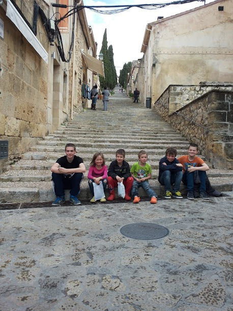

Mallorca!Me, all my brothers (see Pieter) and my sister.From 23-29 March 2014 I played a tournament in Mallorca trying to get my second IM norm. It was a closed tournament with 10 players and my brother Lucas also took part. The flight and everything went well and at 19:00 we arrived at our hotel. Most hotel guests where cyclist who went to visit the beautiful island. The first round started at 20:30 and I was immediately paired against Lucas. I won pretty fast because Lucas was very tired and was more busy with trying to fall asleep then to find the best moves. The second round I started at 16:00 so we had plenty of time to visit the island. Our hotel was next to the beach so we walked down the beautiful beach. After walking for some time the beach suddenly turned into a forest with trees everywhere! When we came back it was almost time for the second round. When I arrived to play my game the organisers told me that my opponent had delay with his air plane so I had to play at 20:00; this time I could use nicely for preparation. I played against Jordan Ivanov (2375). The game was a sharp Taimanov that I didn't know very well but luckily I had recently seen a game between Browne and Van Kampen where the same variation was played. I decided to follow this game but after playing all normal moves my opponent could suddenly win! However we both didn't see it and after that I played a nice game and I won. The third day was a double round day in which I managed to win both of my games. The next day was only one round so we had all the time to visit a nice village in which was a huge staircase with 400 steps. Of course I did a race with all my brothers and my dad who would be on top first and I managed to win the race!  the huge staircase. For some reason the organisers had made a mistake by switching round 2 and 5 so in the first 3 rounds I was white and then I was black three times in a row. This fifth round I played against Nilsen Joachim Birger (2304) with black, after a tense struggle the game ended in a draw. The next day we went to visit a monastery where my father believed the great pianist Chopin had died. Unfortunately that wasn't the case but it was still a huge monastery and we could even watch people making music. In round 6 I played against the lowest rated played (2058) and I won quite easy because my opponent just blundered a pawn in the beginning and had a horrible structure afterwards. In round 7 I won from the the highest rated player(2413). After this round I only needed half a point out of the remaining games for my IM norm. In round 8 I played against someone from Norway who had even played a draw against Carlsen although Carlsen was only 11 then. My opponent had a slight advantage all the time but didn't manage find a way to increase his advantage and after defending a slightly worse ending the game ended in a draw. So I got my IM norm one round before the end of the tournament! In the last game I of course wanted to win to finish the tournament with the highest possible score so I tried to win. When the position was around equal my opponent started wandering around with his queen and with a nice trick I managed to win. I finished first in the tournament with a 2616 performance rating and I got my second IM norm! After the round we went to visit a great cave where even a concert was played for us! During the tournament we had rented a car. The last day we had to bring the car back early in the morning. When we were there no one from the company was there. That was a problem because we were still about 5 kilometers from the airport and we did not have a lot of time. After waiting for more then half an hour we happily saw a taxi who could bring us to the airport. Later on we heard that the rental company had forgotten about the summertime, so they were an hour too late. It was a really nice tournament and I really enjoyed being on Mallorca! |